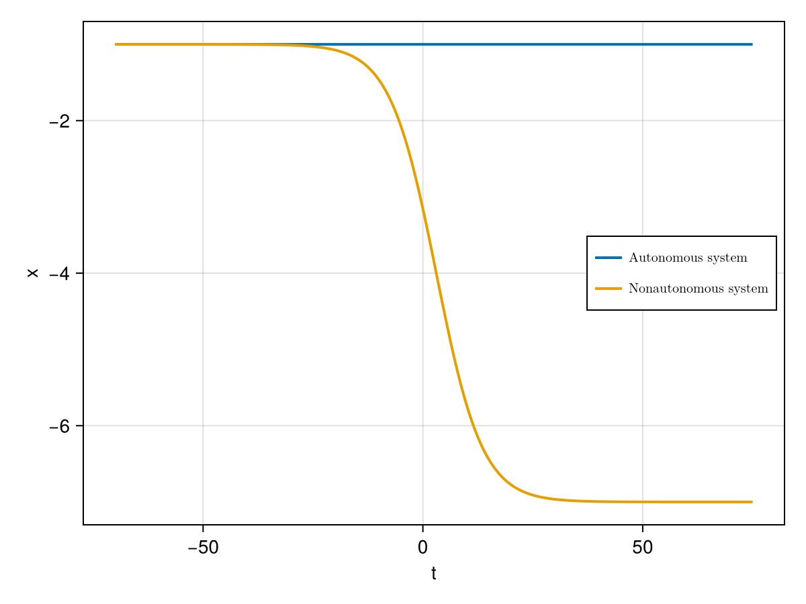
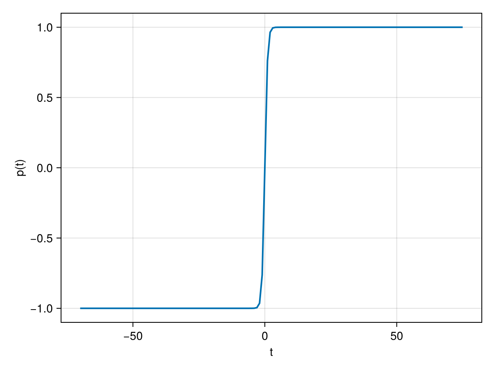

Example: Defining a RateSystem
Consider an autonomous deterministic dynamical system ds (e.g. a CoupledODEs) of which you want to ramp one parameter, i.e. change the parameter's value over time.
Using the RateSystem type, you can easily achieve this in a two-step process:
- Specify a forcing profile
p(t)over an interval $t\in I$. This profile, stored as aForcingProfiletype, describes the shape of the parameter ramping you would like to consider. - Apply this parametric forcing to a given autonomous dynamical system by constructing a
RateSystem. This yields a non-autonomous dynamical system in which the parameters are explicitly time-dependent.
You can rescale the forcing profile in system time units by specifying the start time and duration of the forcing change. Then:
- for times
t < forcing_start_time, the system is autonomous, with parameters given by the underlying autonomous system - for
forcing_start_time < t < forcing_start_time + forcing_duration, the system is non-autonomous with the parameter change given by theForcingProfile - for
t > forcing_start_time + forcing_duration, the system is again autonomous, with parameters fixed at their values attained at the end of the forcing interval (i.e.t = forcing_start_time + forcing_duration).
This setting is widely used and convenient for studying rate-dependent tipping.
Example
Let us explore a simple prototypical example.
We consider the following one-dimensional autonomous system with one attractor, given by the ordinary differential equation:
\[\begin{aligned} \dot{x} &= (x+p)^2 - 1 \end{aligned}\]
The parameter $p$ shifts the location of the extrema of the drift field. We implement this system as follows:
using CriticalTransitions
using CairoMakie
function f(u, p, t) # out-of-place
x = u[1]
dx = (x + p[1])^2 - 1
return SVector{1}(dx)
end
x0 = [-1.0]
ds = CoupledODEs(f, x0, [0.0])1-dimensional CoupledODEs
deterministic: true
discrete time: false
in-place: false
dynamic rule: f
ODE solver: Tsit5
ODE kwargs: (abstol = 1.0e-6, reltol = 1.0e-6)
parameters: [0.0]
time: 0.0
state: [-1.0]
Applying the parameter ramping
Now, we want to explore a non-autonomous version of this system by applying a parameter shift s.t. speed and amplitude of the parameter shift are easily modifiable but the 'shape' of it is always the same - just linearly stretched or squeezed.
First specify a section of a function p(t) that you would like to use to ramp a parameter of ds:
p(t) = tanh(t) # A monotonic function that describes the parameter shift
interval = (-5.0, 5.0) # Domain interval of p(t) we want to consider
fp = ForcingProfile(p, interval)ForcingProfile{typeof(Main.p), Float64}(Main.p, (-5.0, 5.0))Then specify how you would like to use the ForcingProfile to shift the pidx'th parameter of ds:
pidx = 1 # Index of the parameter within the parameter-container of ds
forcing_start_time = -50.0 # Time when the parameter shift should start
forcing_duration = 105.0 # Time interval over which p(interval) is spread out or squeezed
forcing_scale = 3.0 # Amplitude of the ramping. `p` is then automatically rescaled
t0 = -70.0 # Initial time of the resulting non-autonomous system (relevant to later compute trajectories)
rs = RateSystem(ds, fp, pidx; forcing_start_time, forcing_duration, forcing_scale, t0)1-dimensional RateSystem
deterministic: true
discrete time: false
in-place: false
dynamic rule: RateSystemSpecs
parameters: [0.0]
time: -70.0
state: [-1.0]
Choosing different values of the forcing_duration allows us to vary the speed of the parameter ramping, while its shape remains the same, and it only gets stretched or squeezed.
If p(t) within the ForcingProfile is a monotonic function, the forcing_scale will give the total amplitude of the parameter ramping. For non-monotonic p(t), the forcing_scale will only linearly scale the amplitude of the parameter ramping, but does not equal the total amplitude.
Now, we can compute trajectories of this new system rate_system and of the previous autonomous system ds in the familiar way:
T = forcing_duration + 40.0; # length of the trajectory that we want to compute
auto_traj = trajectory(ds, T, x0);
nonauto_traj = trajectory(rs, T, x0);We plot the two trajectories:
fig = Figure();
axs = Axis(fig[1, 1]; xlabel="t", ylabel="x");
lines!(
axs,
t0 .+ auto_traj[2],
auto_traj[1][:, 1];
linewidth=2,
label=L"\text{Autonomous system}",
);
lines!(
axs,
nonauto_traj[2],
nonauto_traj[1][:, 1];
linewidth=2,
label=L"\text{Nonautonomous system}",
);
axislegend(axs; position=:rc, labelsize=10);
fig
We can also plot the shifted parameter p(t):
time_range = range(t0, t0+T; length=Int(T+1));
fig = Figure();
ax = Axis(fig[1, 1]; xlabel="t", ylabel="p(t)");
lines!(ax, time_range, fp.profile.(time_range); linewidth=2);
fig
This page was generated using Literate.jl.